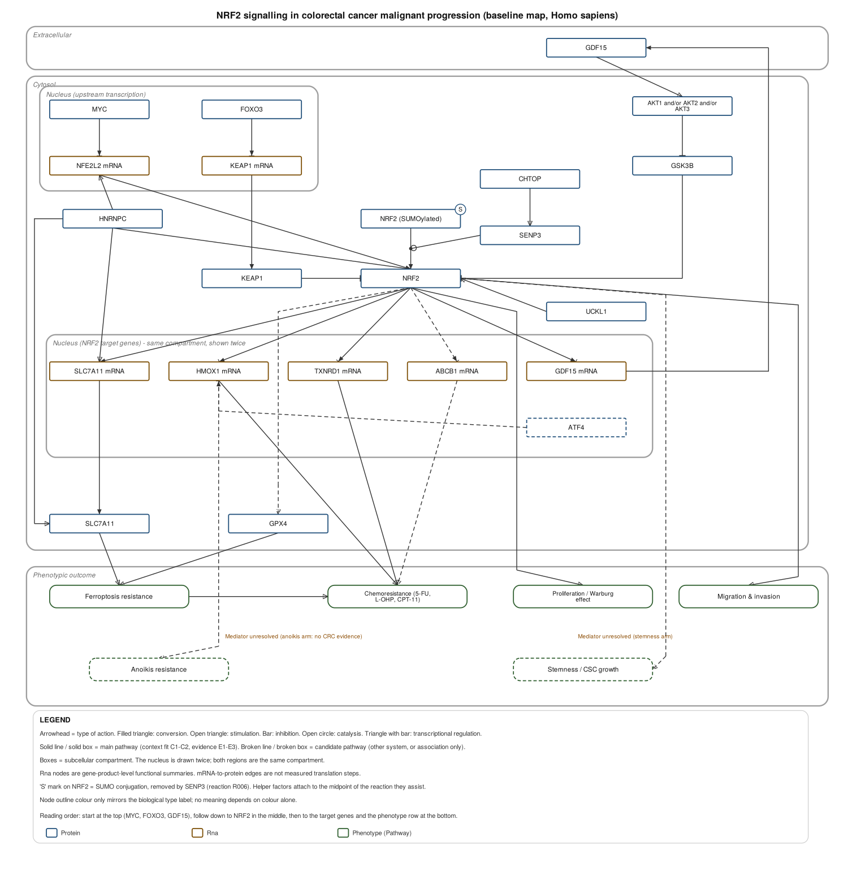

A prompt template that asks a general-purpose LLM to build a biological pathway map from the literature — and to leave behind the evidence trail that produced it.
The output is two files that stay in sync: a GPML file (GPML2013a) that opens and edits natively in PathVisio, and an Excel workbook in which every node and every edge traces back to a specific observation in a specific paper. GraphIds in the GPML match row IDs in the workbook, in both directions.
Asking a model for “a pathway diagram of X” usually produces one of two failure modes: a picture pasted into a file that cannot be edited, or a plausible-looking network in which it is impossible to tell which arrows rest on a direct biochemical experiment, which rest on a knockdown, and which rest on a correlation observed in a different cell type.
Directness (E1–E4) and context fit (C1–C4) are recorded separately. A binding assay in the wrong cell type and an indirect effect in the right model are different weaknesses.
Arrowhead shape encodes the action. Line style encodes the pathway layer. Anything resting on association alone is drawn broken, and the legend says so.
Where evidence is absent, the template requires Mediator unresolved rather than
a plausible filler. Empty searches are recorded as empty searches.
| Evidence level | Meaning |
|---|---|
E1 | Direct — purified protein / in vitro reaction, direct binding, ChIP + reporter mutation |
E2 | Perturbation-dependent — knockdown, knockout, inhibitor or overexpression changes the readout |
E3 | Indirect — perturbation effect shown, but a mediator may intervene |
E4 | Association only — correlation, co-expression, co-localisation |
| Context fit | Meaning |
|---|---|
C1 | Species, disease, cell/tissue and condition all match |
C2 | Species matches; cell, disease or condition partly differs |
C3 | Different species, or an unrelated cell line |
C4 | Cell-free, computational prediction, or database annotation only |
A relation enters the main pathway only if it is C1–C2 and carries at least one piece of E1–E3 evidence. Everything else is a drawn-but-broken candidate pathway, or held-back information with the reason recorded. Full rationale in the method notes.

Every route found for raising NRF2 level or activity in colorectal cancer turned out to be post-transcriptional: GDF15–AKT–GSK3β stabilisation (with NRF2 driving GDF15 in return, closing a feedback loop), UCKL1 stabilisation, HNRNPC acting on both transcript and protein, and CHTOP recruiting a SENP3 complex that deSUMOylates NRF2. The one negative regulator retrieved with direct promoter-binding evidence is FOXO3 → KEAP1.
The example is included partly because it did not come out clean:
Mediator unresolved.confirm = abstract. The four
relations graded E1 should be checked against the original figures before the map is
used for anything load-bearing.
The example ships with the script that produced it. Running it on the first draft found eight edges passing through unrelated node rectangles, and XSD validation found two genuine encoding bugs — which is why the checks are in the template.
[2] XSD validation against GPML2013a.xsd: PASS
[3] GraphId uniqueness: PASS (83 unique ids)
[4] GraphRef / Anchor / GroupRef resolution: PASS
[7] node-node overlap: PASS (none)
[8] edge-through-node check: PASS
[9a] Entities <-> DataNode IDs: PASS (28 nodes, both directions)
[9b] Reactions <-> Interaction IDs: PASS (34 reactions, both directions)
[10] evidence-to-style consistency: PASS. No E4/C3/C4 relation is drawn solid.xmllint --noout --schema GPML2013a.xsd, and the previews are rendered from the same
structural definition — but by a separate renderer, not by PathVisio. Details may differ
from how PathVisio lays the file out.